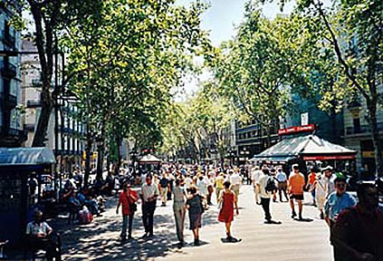

Johnnie and Oberta Baker's Photo Album Previous Gallery Next
|

Las Ramblas--Probably the most touristy place in Barcelona. Las Ramblas in Barcelona is approximately 1.2 kilometres long with Port Vell (near the cruise port terminal) at the Southern most end and Placa Catalunya at the northern most end. When Bob and Ellen arrived, we had dinner in a restaurant on Las Ramblas and each of us had a wonderful glass of sangria. |